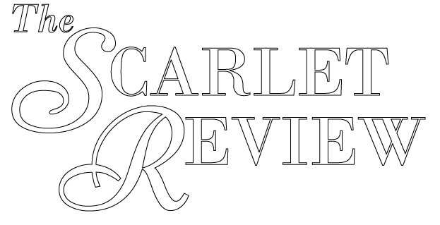
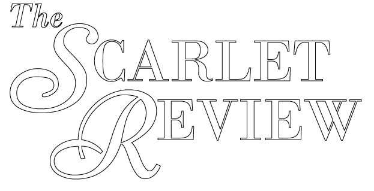
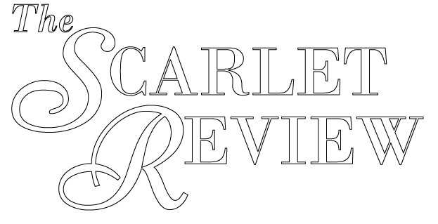
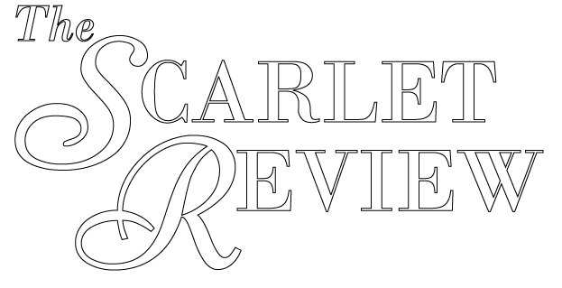

This song is my remix that I based, in part, from both a small portion of, as well as from the underlying theme, from the book, Wide Sargasso Sea, by Jean Rhys. The goal of my remix was to challenge and attempt to answer the ‘un’ in the story–the unsaid, unheard, and the unfelt of what I wish Rhys herself may have challenged more in her original remix. Thus, the lyrics are my interpretation of the thoughts and feelings coming from the unnamed narrator’s point of view. I also incorporated other elements of postcolonial revisionary strategies such as nature and culture into the scenery of the lyrics, to both strengthen as well as exemplify the Caribbean setting of the Sargasso Sea. I originally wrote this as a poem, but then “heard” it as song. It was through the creative efforts of my friend and fellow classmate, Amir (also known as FlyMcFly, or Donnell Holland, Jr.), that my poem transformed into this song.
Rhys’ book is the prequel to Charlotte Bronte’s, Jane Eyre, and is Rhys’ invocative remix of the story of Bertha, the madwoman in the attic. The unnamed narrator in Wide Sargasso Sea is the naive and unfortunate bachelor chosen to marry Bertha’s daughter, Antoinette, who has inherited her mother’s mental instability. I chose to spotlight the unnamed narrator in my piece because I feel not only sorry for him, but also angry, mainly because he was not told about the potential of a disastrous marriage and life because his father just outright chose not to tell him, and he is now stuck in an unfortunate situation with no good way out. I chose this particular scene to expand upon from Rhys’ work to simply allow the unnamed narrator to have a voice to be ‘heard,’ as Rhys purposely silenced him in her novel to exemplify one form of colonial commodification practiced by the colonizers in this postcolonial novel. Here I allow her unnamed narrator the opportunity to think, vent and reflect upon how and why he wound up where he did in life. I believe the reason why he was not told by his father, mainly, as well his brother–and was therefore exploited as such–is greed.